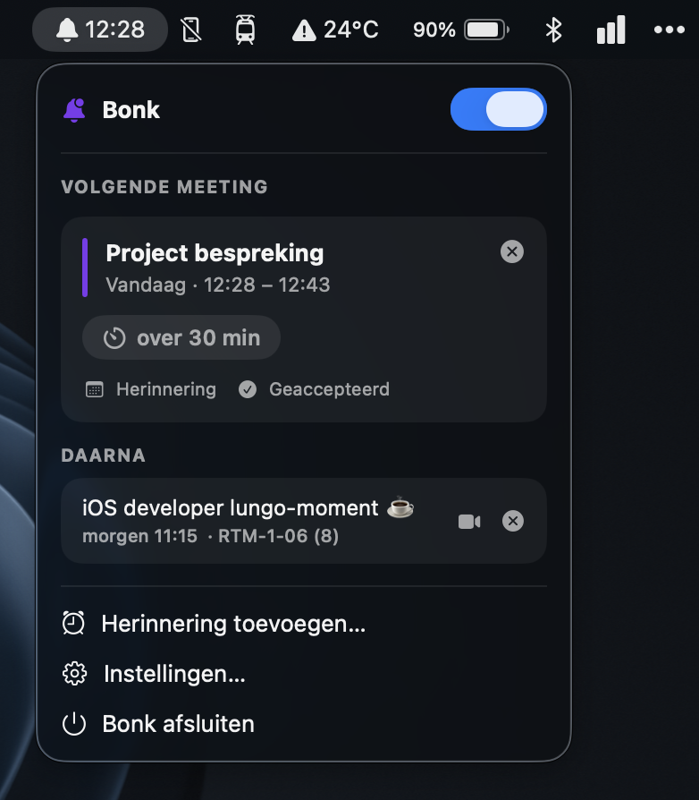
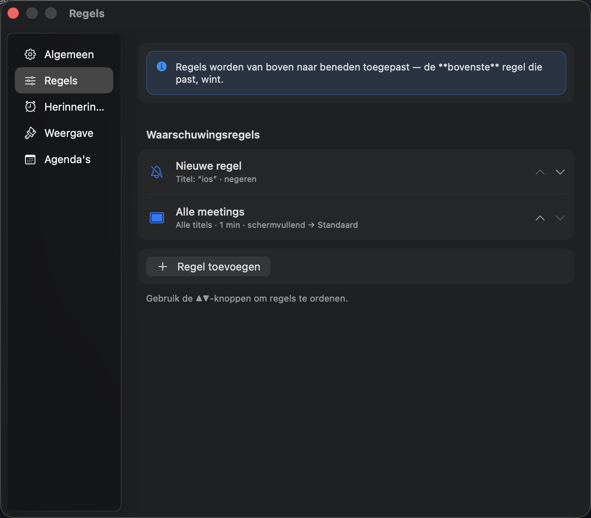
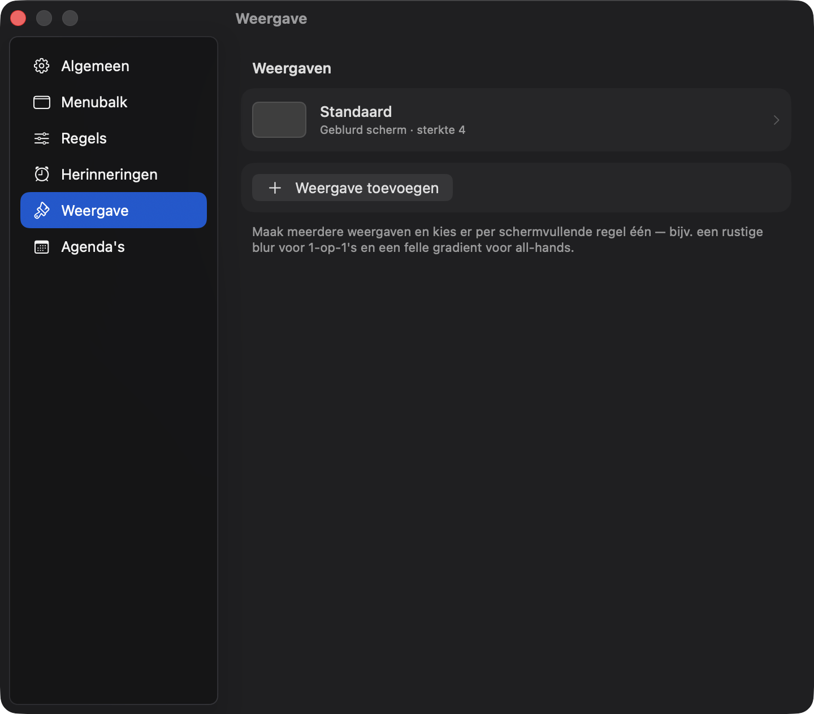
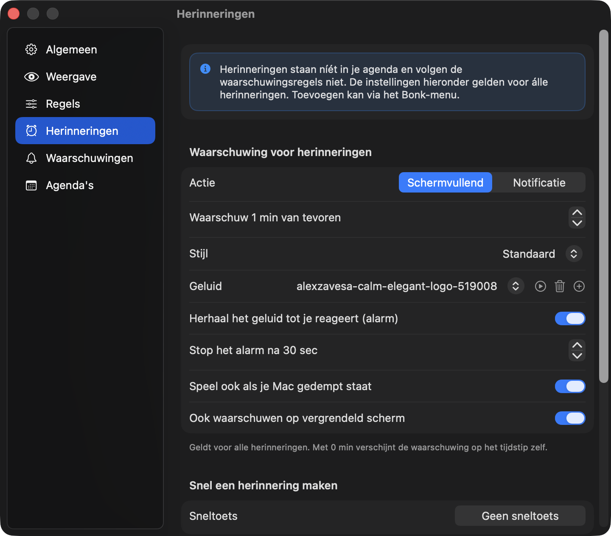
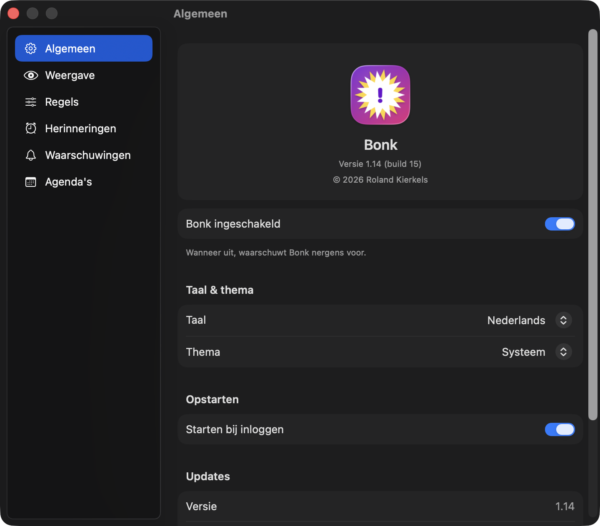

🖥️
Schermvullende waarschuwing
Een grote, gelikte melding die over álles heen komt — ook over fullscreen apps. Onmogelijk te missen, met de titel, tijd, ruimte en een live aftelteller — en hij verschijnt stipt op de seconde.
Bonk waarschuwt je vlak voor een afspraak met een schermvullende melding die je niet kúnt missen — met één klik joinen, snoozen of negeren. Of houd het subtiel met een pill boven aan je scherm. Jij bepaalt het, per meeting.

Bonk leeft in je menubalk, leest je agenda en springt op het juiste moment in beeld — precies zo opvallend of subtiel als jij wilt.
Een grote, gelikte melding die over álles heen komt — ook over fullscreen apps. Onmogelijk te missen, met de titel, tijd, ruimte en een live aftelteller — en hij verschijnt stipt op de seconde.
Liever rustig? Kies per regel voor een subtiele pill boven aan je scherm — met aftelteller, Joinen en Snooze. Hij verschijnt op het scherm waar je werkt, ook over fullscreen apps.
Bonk vist automatisch de vergaderlink uit je afspraak — Google Meet, Zoom, Teams of Webex — en zet er een Joinen-knop op. Of laat 'm automatisch openen op de starttijd.
Bepaal precies waarvoor je gewaarschuwd wordt: op titel, RSVP-status (geaccepteerd en/of uitgenodigd), bepaalde dagen of een of meer agenda's — en hoeveel minuten van tevoren.
Nooit gewaarschuwd worden voor lunch, prikkers of ‘[hold]’-blokken? Maak een negeer-regel en die meetings blijven stil — automatisch.
Stel stijlen in: gradient, een geblurd beeld van je scherm, een eigen afbeelding of effen kleur. Kies per regel welke je gebruikt, en wat er getoond wordt.
Twee afspraken op hetzelfde moment? Bonk toont ze allebei, elk met een eigen Joinen-knop, zodat je zelf kiest waar je heen gaat.
Meerdere monitors? De melding verschijnt op je hoofdscherm; de andere schermen krijgen hetzelfde sfeervolle achtergrondeffect. Nergens te ontsnappen.
Iets wat niet in je agenda staat? Voeg snel een herinnering toe — over X minuten of uur, of op een exact tijdstip. Ze staan los van je meetings, met hun eigen weergave-instelling — en na de melding zijn ze weg (of verzet je ze met snooze).
Zie je volgende meeting in de menubalk: alleen een icoon, een aftelteller, het tijdstip of de titel — in je eigen agenda-kleur, met een icoon naar keuze. Plus een gekleurde markering zodra je meeting eraan komt. Bepaal zelf hoeveel dagen je vooruit ziet en, als je wilt, een maximum aantal meetings.
Werkt met de agenda's die je Mac al synct — Google, iCloud, Exchange — via EventKit. Kies per agenda of je 'm volgt en welke kleur 'ie krijgt.
Volgt automatisch de taal en weergave van je Mac, of forceer je eigen keuze. Een echte menubalk-app: geen Dock-icoon, start bij inloggen.
Geef elke waarschuwing een eigen geluid. Of laat het bij een schermvullende melding herhalen als een alarm — net zolang als je wilt, tot je joint, snoozet of sluit.
Belangrijk alarm? Bonk kan je Mac er even uit mute halen zodat je het op je ingestelde volume hoort, en zet de mute daarna keurig terug.
Staat je Mac vergrendeld? Dan stuurt Bonk een notificatie met geluid, zodat je de meeting ook dan niet mist.
Bonk controleert zelf op nieuwe versies en laat het je weten — met één klik naar de download.
Eén overzichtelijk instellingenvenster. Stel je regels in, ontwerp je stijlen, voeg herinneringen toe en regel taal, thema en de menubalk.

Meerdere regels, de bovenste die past wint. Filter op titel, agenda, dagen of geaccepteerd — en kies schermvullend, notificatie of negeren.

Gradient, geblurd scherm, afbeelding of effen kleur. Bepaal wat er op het scherm komt en koppel een stijl aan een regel.

Voeg snel iets toe dat niet in je agenda staat. Eén instelling bepaalt voor álle herinneringen de weergave — inclusief geluid, alarm en lock-scherm.

Nederlands of Engels, licht of donker, en kies wat de menubalk toont. Plus automatisch starten bij inloggen.
Bonk is volledig gratis en advertentievrij. Geen abonnement, geen "pro"-versie achter een betaalmuur. Gewoon een fijn hulpmiddel dat ervoor zorgt dat je op tijd in je meeting zit.
Bonk leest je agenda rechtstreeks op je eigen Mac via EventKit — er gaat niets naar een server. Geen account, geen tracking, geen profielen. Ook de geblurde achtergrond wordt lokaal van je scherm gemaakt en verlaat je apparaat niet.
Bonk leest je agenda en toont vlak vóór elke meeting een schermvullende waarschuwing (of een subtiele pill) met een live aftelteller en een Joinen-knop — ook over fullscreen-apps heen. Desnoods met een herhalend alarmgeluid, zelfs als je Mac op mute staat of vergrendeld is.
Ja. Bonk gebruikt de agenda's die je Mac al synchroniseert — Google Calendar, iCloud, Outlook/Exchange en elke andere agenda in de macOS Agenda-app. Geen apart account of koppeling nodig.
Een macOS-notificatie is een klein hoekbanner dat zó weer weg is. Bonk maakt er een melding van die je écht niet mist: schermvullend of als pill boven aan je scherm, met joinen in één klik, snooze, alarmgeluid en slimme regels per agenda, titel, dag of RSVP-status.
Ja — volledig gratis, zonder advertenties, account of in-app aankopen. Je downloadt de app rechtstreeks via GitHub Releases.
Bonk vereist macOS 14 (Sonoma) of nieuwer. Het is een lichte menubalk-app: geen Dock-icoon, start automatisch bij inloggen en gebruikt nauwelijks geheugen.
Je agenda wordt lokaal op je Mac gelezen via EventKit — er gaat niets naar een server. Geen tracking, geen analytics, geen verzamelde gegevens.
Download Bonk en stel je eerste regel in een minuut in.
Download voor macOSGratis · privacyvriendelijk · macOS 14+